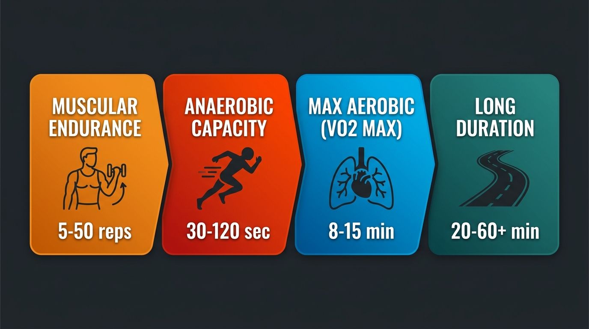
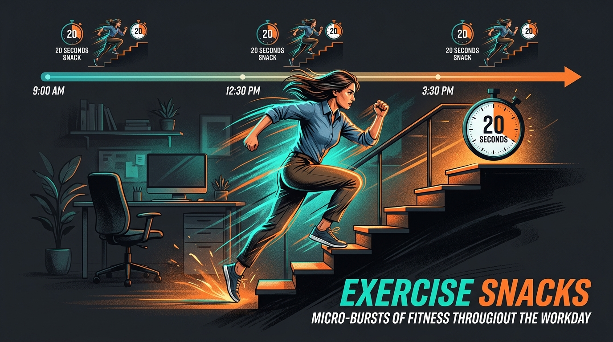
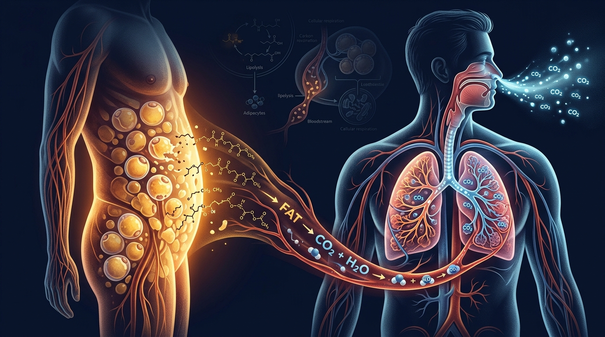
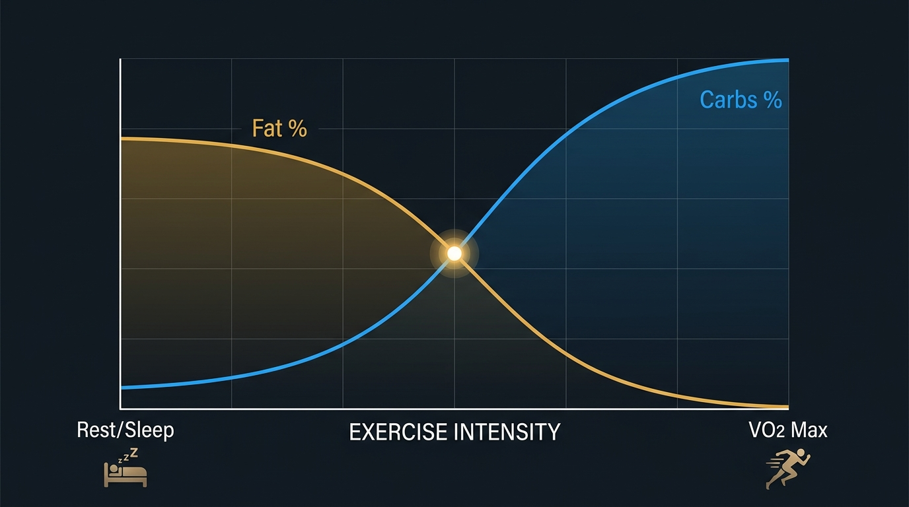
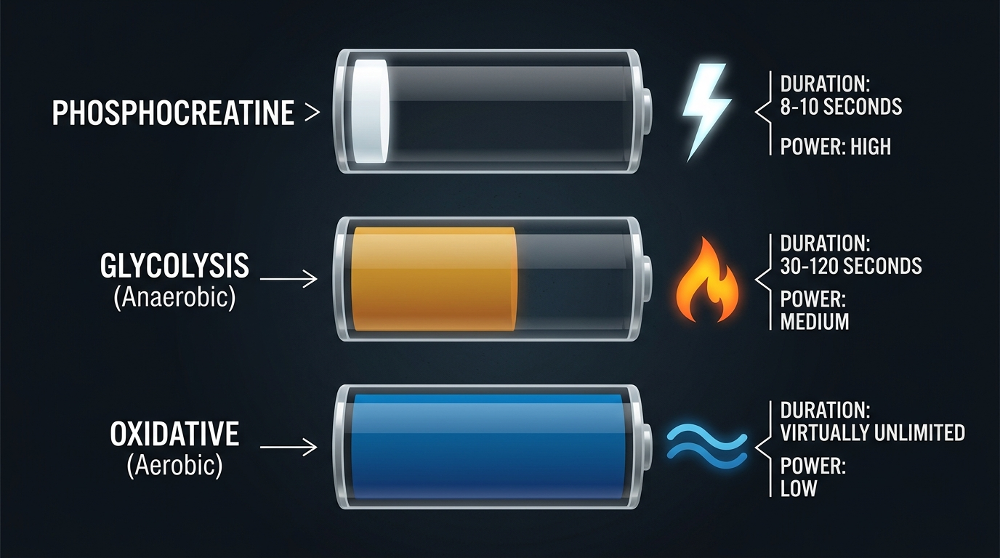

Endurance comes down to two things: fatigue management and fuel
Everything about endurance — whether you're running a marathon or climbing a flight of stairs — reduces to your body's ability to (1) manage fatigue signals and (2) produce and deliver energy. Most people think their limitation is one of these when it's actually the other.

There are four distinct types of endurance, each with different energy demands and training protocols:
| Type | Duration | Example | Primary Limiter |
|---|---|---|---|
| Muscular Endurance | 5-50 reps | Push-ups, stair climbing, carrying groceries | Local muscle fatigue (not cardiovascular) |
| Anaerobic Capacity | 30-120 sec | Sprint, surfing paddle-out, steep hill | Acid buildup, hydrogen ion accumulation |
| Max Aerobic (VO2 Max) | 8-15 min | Running a mile, 2K row | Oxygen delivery and utilization |
| Long Duration | 20-60+ min | Long run, bike ride, hiking | Fuel depletion, heat, hydration |
Plus two often-overlooked dimensions: sustained daily energy (not crashing at 2pm) and postural endurance (maintaining position without breakdown). Both are endurance problems most people don't recognize as such.
The fastest way to improve endurance isn't more miles — it's better mechanics
"The quickest way to improve endurance is to improve mechanics. And the mechanical thing I would go after first is your breathing." — Dr. Andy Galpin
Galpin's hierarchy for rapid endurance improvement:
Fix your breathing (nasal breathing as the "cheat code")
Nasal breathing forces proper mechanics by default — it slows breathing rate, improves CO2 tolerance, and prevents the over-breathing that drains you prematurely. Use it as your first intervention for any endurance limitation.
Fix your posture
Hunching compresses your rib cage against your femur (especially on bikes). This restricts breathing volume and forces compensatory patterns. Stay upright — efficiency trumps force for endurance.
Fix your movement technique
Small mechanical leaks don't matter for one rep. Over thousands of reps, they compound into massive energy waste. A 2% efficiency improvement over a 10K run is enormous.
Exercise snacks: 20 seconds that actually move the needle

Canadian research: 20-second bursts, 3x per day, measurable VO2 Max improvement in 6 weeks
Run up stairs or do any all-out effort for 20 seconds, repeated every 4 hours throughout the day. No gym, no shower, no gear. After 18 sessions across 6 weeks, participants showed statistically significant improvements in VO2 Max, cardiorespiratory fitness, and cognitive performance.
Fat loss is literally breathing out carbon

This is the episode's most mind-bending insight. All metabolism is about breaking carbon bonds. When you "burn" fat, the carbon atoms from fat molecules are bound to oxygen in your cells and exhaled as CO2. The water (H2O) leaves through sweat and urine.
"Fat loss is carbon in, carbon out. To lose fat, you must exhale more carbon than you consume. That's the entire mechanism." — Dr. Andy Galpin
This reframes everything: food is carbon input, breathing is carbon output. Exercise increases the rate of carbon exhalation. Sleep, walking, fidgeting — all of it contributes to the "carbon out" side of the equation.
The "fat burning zone" is real but misleading

The crossover concept explains how fuel mix changes with exercise intensity:
"Low-intensity exercise burns more fat, so it's better for fat loss"
At rest/sleep you burn ~70% fat as fuel. During low-intensity exercise, fat percentage is high. During high-intensity, you burn almost 100% carbs. So the "fat burning zone" exists — low intensity does burn a higher percentage of fat.
Burning fat as fuel ≠ losing body fat
Fat loss is about total carbon output, not what percentage of fuel comes from fat during exercise. High-intensity exercise burns more total calories (and therefore more total carbon), even though a lower percentage comes from fat. Sleep burns the highest percentage of fat of any activity — but nobody recommends sleeping more for fat loss.
"Eating carbs late at night makes you fat"
Decades of research show evening carb consumption does not increase fat gain. Athletes often eat high-carb meals in the evening for sleep quality and glycogen restoration. Meal timing is not a meaningful variable for fat loss — total caloric intake and training stimulus are what matter.
Your body's three fuel systems (and why lactate isn't the villain)

Phosphocreatine: instant power, gone in 8-10 seconds
The fastest energy source. Stored directly in muscle, used for explosive efforts. Replenishes in 3-5 minutes of rest. This is why creatine supplementation works — it increases the stored fuel for this system.
Glycolysis: 30 seconds to 2 minutes of intense work
Breaks down muscle glycogen (stored carbs) without oxygen. Produces pyruvate and free hydrogen ions. The hydrogen ions cause acidity (the "burn"). Lactate is NOT waste — it's produced by binding pyruvate to hydrogen ions, actually preventing pH crash. The heart uses lactate as preferred fuel.
Oxidative (aerobic): unlimited duration, lower power
Completes carb breakdown via the Krebs cycle in mitochondria. Also burns fat. Requires oxygen delivery. Produces 28-35 ATP per glucose molecule (vs. 2 from glycolysis alone). Mitochondrial capacity is the master limiter — it gates both aerobic AND anaerobic performance.
"Lactate doesn't cause fatigue — it's a marker of fatigue. High lactate means anaerobic systems are running hard. Lactate is actually buffering the real problem: hydrogen ion accumulation." — Dr. Andy Galpin
Metabolic flexibility: can you use both fuel sources well?
Metabolic flexibility means efficiently switching between fat and carbs depending on context. It's NOT about maximizing fat burning — it's about using the right fuel for the right demand.
Test your fat utilization
Run a familiar 15-minute loop fully fasted. If your pace barely drops vs. fed, your fat utilization is good. If you need caffeine to function in the morning before eating, that's a red flag for poor fat utilization.
Test your carb utilization
Eat 50g of carbs. If you crash 30 minutes later, your carb regulation needs work. Good carb utilization = stable energy after eating, no spike-and-crash pattern.
To improve carb utilization: eat carbs before high-intensity exercise. To improve fat utilization: do low-intensity work fasted or with fat only. Specificity applies — practice the fuel source you want to adapt to.
6 Things to Remember
Fat loss = exhaling carbon
All fat loss happens through CO2 exhalation. Food is carbon in, breathing is carbon out. Exercise increases the rate. This is the entire mechanism — everything else is detail.
The "fat burning zone" is misleading
Low-intensity burns a higher percentage of fat as fuel, but high-intensity burns more total carbon. Sleep burns the highest percentage of fat. Total energy expenditure is what drives fat loss, not fuel source during exercise.
Fix breathing before adding miles
Nasal breathing, upright posture, and efficient movement technique will improve your endurance faster than grinding out more volume with bad mechanics.
Exercise snacks work
20-second all-out stair sprints, 3x per day, 3x per week for 6 weeks = measurable VO2 Max improvement. No gym, no shower, no excuses.
Lactate is fuel, not waste
Lactate buffers acidity and serves as fuel for the heart. It doesn't cause fatigue — it's a marker of high anaerobic demand. The real villain is hydrogen ion accumulation.
Build metabolic flexibility, not just "fat adaptation"
The goal isn't to maximize fat burning — it's to efficiently switch between fuel sources based on demand. Test with fasted runs and post-carb energy stability.
Watch the Full Episode
- The carbon cycle of metabolism — how oxygen, carbon, and respiration form the foundation of all energy production and fat loss
- Cardiac output & stroke volume — why maximum heart rate doesn't increase with training but stroke volume does, and what that means for fitness
- Glycogen depletion & "bonking" — the hierarchy of energy storage, what happens at 75% glycogen depletion, and why liver depletion causes total shutdown
- The complete Krebs cycle walkthrough — how aerobic metabolism completes carb breakdown in mitochondria, producing 28-35 ATP per glucose
- Metabolic flexibility testing protocol — practical fasted-run and post-carb tests, plus biomarker targets (blood glucose, AST/ALT)
- Fueling strategies by training type — when to eat carbs vs. fast, how protein and fiber affect glucose response, and why meal timing doesn't matter for fat loss